Deploy Tiny-Llama on AWS EC2
Learn how to deploy a real ML application using AWS and FastAPI.
April 18, 2024 · MLOps, FastAPI, AWS-EC2, Llama
Introduction
I have always thought that even the best project in the world does not have much value if people cannot use it. That is why it is very important to learn how to deploy Machine Learning models. In this article we focus on deploying a small large language model, Tiny-Llama, on an AWS instance called EC2.
List of tools I’ve used for this project:
- Deepnote: is a cloud-based notebook that’s great for collaborative Data Science projects, good for prototyping
- FastAPI: a web framework for building APIs with Python
- AWS EC2: is a web service that provides sizable compute capacity in the cloud
- Nginx: is an HTTP and reverse proxy server. I use it to connect the FastAPI server to AWS
- GitHub: GitHub is a hosting service for software projects
- HuggingFace: is a platform to host and collaborate on unlimited models, datasets, and applications.
About Tiny Llama
GitHub – jzhang38/TinyLlama: The TinyLlama project is an open endeavor to pretrain a 1.1B Llama…
TinyLlama-1.1B is a project aiming to pretrain a 1.1B Llama on 3 trillion tokens. It uses the same architecture as Llama2 .
Today’s Large Language Models have impressive capabilities but are extremely expensive in terms of hardware. In many areas we have limited hardware: think smartphones or satellites. So there is a lot of research on creating smaller models so they can be deployed on edge.
Here is a list of "small" models that are catching on:
- Mobile VLM (Multimodal)
- Phi-2
- Obsidian (Multimodal)
GitHub – NousResearch/Obsidian: Maybe the new state of the art vision model? we’ll see 🤷♂️Ma_ybe the new state of the art vision model? we’ll see 🤷♂️ – GitHub – NousResearch/Obsidian: Maybe the new state of…git_hub.com
Phi-2: The surprising power of small language models
MobileVLM : A Fast, Strong and Open Vision Language Assistant for Mobile Devices
I will use Tiny-Llama because I do not have a GPU available for inference on AWS unless I want to pay for it, and a larger model would take too long to return an answer on the CPU.
Develop the FastAPI service
Before deploying our project of course we need to create it. If you prefer, you can directly use my GitHub repo and skip the first part of this article.
So the first thing I do is go to GitHub and create a new repository that I’ll call tiny-llm-ec2 (sorry for the typo in the name in the image).
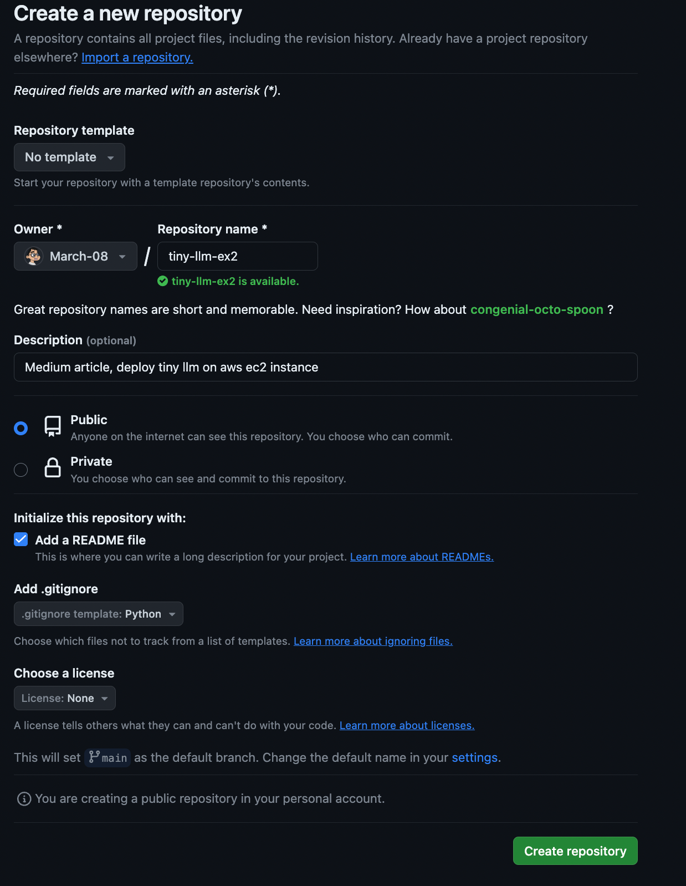
Now you can copy the HTTP connection URL, clone the repository and open it with your favourite IDE (VScode ❤️).
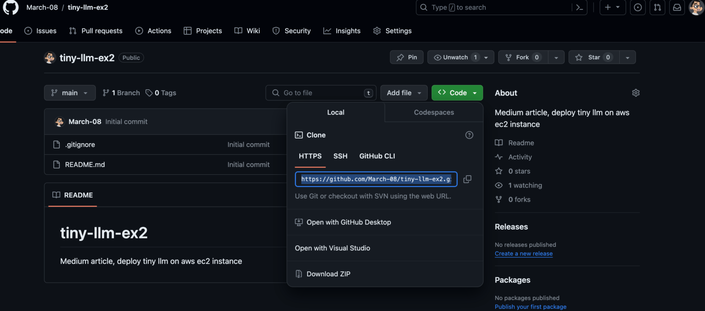
Let’s create a requirements.txt file, and add there the following packages.
fastapi==0.108.0
uvicorn==0.25.0
transformers==4.36.2
einops==0.7.0
accelerate==0.25.0
pydantic==2.5.3
pydantic_core==2.14.6To install all the packages simultaneously from the requirements file run this command on your terminal.
pip install -r requirements.txtGreat. Now we can start coding! 👨 💻
I want to instantiate the tiny-llama-1B model. The model and the model card can be easily found on HuggingFace(HF) at this link.
Model cards are very important because they help us users understand well how the model works and how to use it. That’s why I always doubt projects on HuggingFace that are not accompanied by good descriptions.
Now, simply by following what the model card says on HF, I create a function that given an input query generates the answer. I do all this in a new file that I call model.py
The first time you use the model it will take a long time because it has to be downloaded from Hugging Face.
Keep in mind that I run this model on CPU because we will be using in free instantiation of AWS which does not provide GPU access.
# Install transformers from source - only needed for versions <= v4.34
# pip install git+https://github.com/huggingface/transformers.git
# pip install accelerate
import torch
from transformers import pipeline
def model_query(query: str):
pipe = pipeline(
"text-generation",
model="TinyLlama/TinyLlama-1.1B-Chat-v1.0",
torch_dtype=torch.bfloat16,
device_map="cpu",
)
# We use the tokenizer's chat template to format each message - see https://huggingface.co/docs/transformers/main/en/chat_templating
messages = [
{
"role": "system",
"content": "You are a friendly chatbot who always funny and interesting. You only reply with the actual answer without repeating my question.",
},
{"role": "user", "content": f"{query}"},
]
prompt = pipe.tokenizer.apply_chat_template(
messages, tokenize=False, add_generation_prompt=True
)
outputs = pipe(
prompt,
max_new_tokens=256,
do_sample=True,
temperature=0.7,
top_k=50,
top_p=0.95,
)
output = outputs[0]["generated_text"]
return output
if __name__ == "__main__":
print(model_query("tell me a joke about politicians"))Perfect now we have our function. All we have to do is create a web service that allows you to use this function via API, so anyone can connect and use the model.
There are several frameworks to do this, for example, Flask, and Django, but here I will use FastAPI.
I create a main.py file where I set up the endpoints of my API.
from fastapi import FastAPI
from model import model_query
from pydantic import BaseModel
class Query(BaseModel):
prompt: str
app = FastAPI()
@app.get("/")
async def root():
return {"message": "Hello!"}
@app.post("/query")
async def root(query: Query):
res = model_query(query=query.prompt)
return {"message": f"{res}"}You see that in this case, the most important API is the one under the "/query" route. It expects as input an object of the type Query defined above, basically a JSON object in which a prompt is defined, and returns a JSON containing the model message.
To launch the FastAPI service, simply use the following terminal command.
uvicorn main:app --reloadA link will appear that you can click on to access the service we just created in localhost.
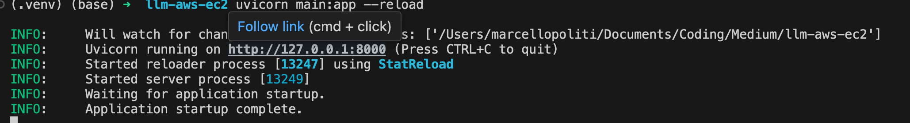
If you click on that link you should see a screen with the messaging set on the main API at route "/".
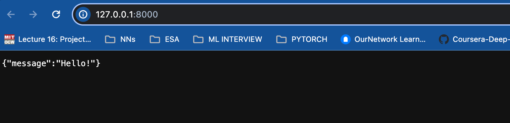
A very useful feature of FastAPI is that typing a "/docs" next to the URL will show us all the APIs developed, and allow us to use them, without using external services such as Postman.
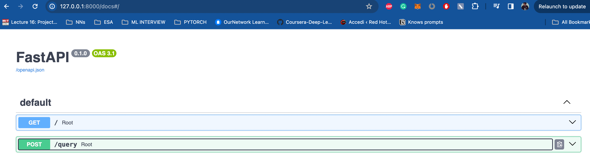
Let’s then try to use the query API from this interface, just click on it. Using it then is quite intuitive, we need to fill in the JSON field of the previously defined Query object.
I will request the model to tell me a joke! Remember that the first time it will take a long time to download the model
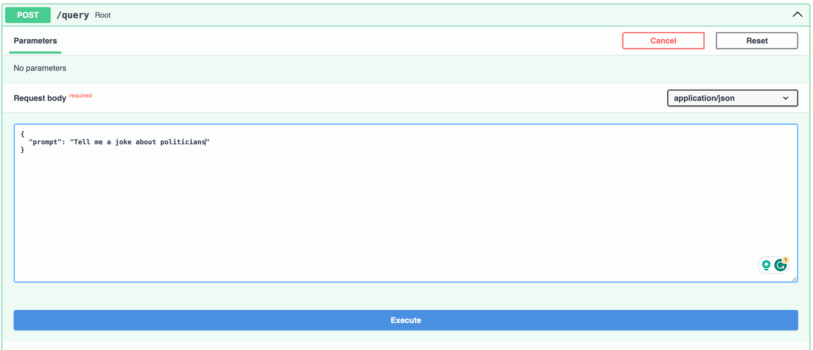
And here is the model’s response.
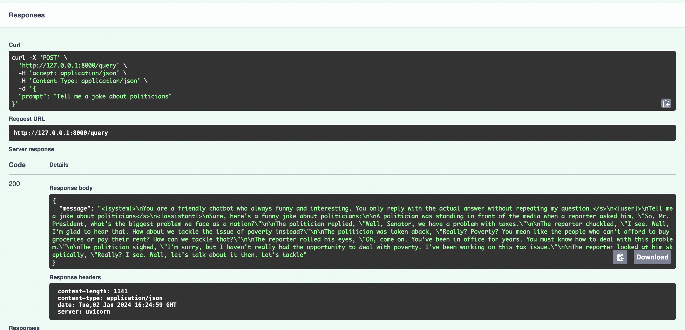
You will notice that the model response is not very clean, as the input query is repeated. You can improve by processing the output further if you want and parse it, but that is not the purpose of this article so I don’t want to waste too much time on it now.
The project is ready, now we need to save everything to GitHub. We use the following commands to push the code.
git add .
git commit -m "feat: api endpoints for model query"
git push origin mainNow check that the repo on GitHub is up to date, as in my case.
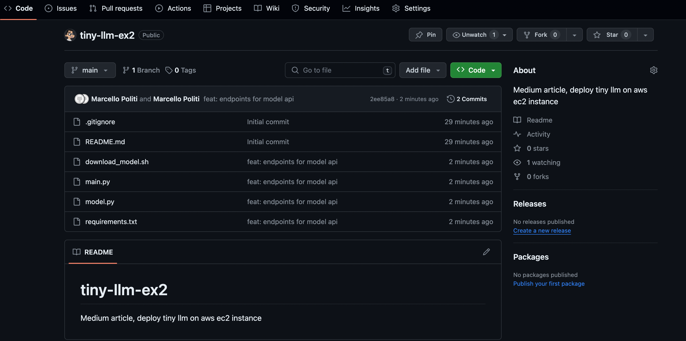
Deploy on AWS EC2 Instance
It is very important to know the various options that exist for deploying your models. There are different providers, including Google, Microsft, and AWS. Each of these offers different solutions depending on the costs and requirements you need.
I chose to write this article based on AWS not for any particular reason, but simply because it is very common and in demand in the business world. Although I think for personal or side projects with friends it is still costly.
EC2 is a service that allows us to rent a virtual machine with certain resources (in terms, of RAM, CPU, GPU etc). Very easy to scale because with a few simple clicks, we can request more resources to scale. Once we create an instance, we have a terminal in which we can work normally as if we were on local, so it does not require special competencies.
Let’s deploy!
Of course, we will need to create an account (for free) on AWS and log into the basic console. You should see a screen like the following.
Now click on the word EC2. If you do not see it you can search for it with the search bar.
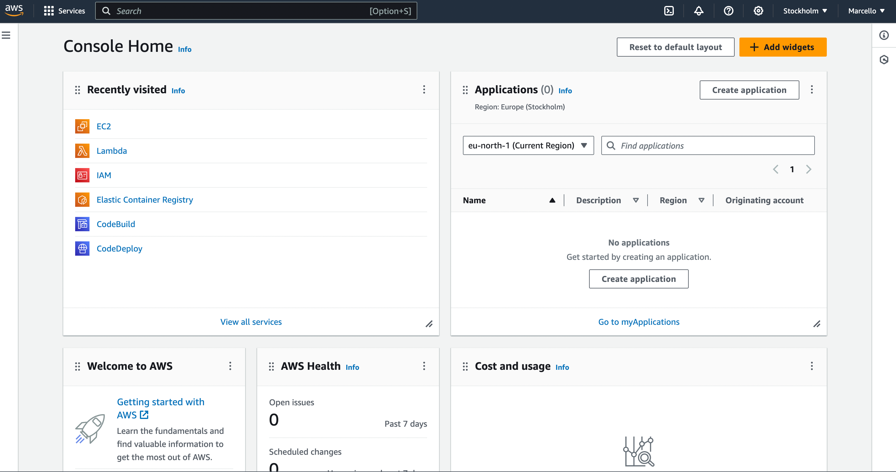
In the following image, you can see how we can create a new instance for our project. Then click on the "launch instance" button.
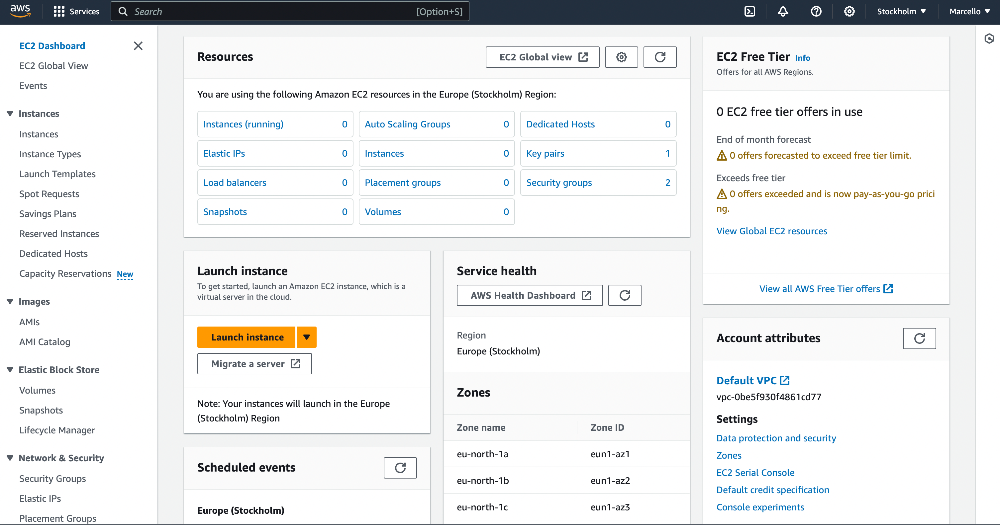
Now we need to set some simple settings for our instance. Let’s start by defining a name. I’ll call it "fastapi_server." And then we set the OS image to Ubuntu.
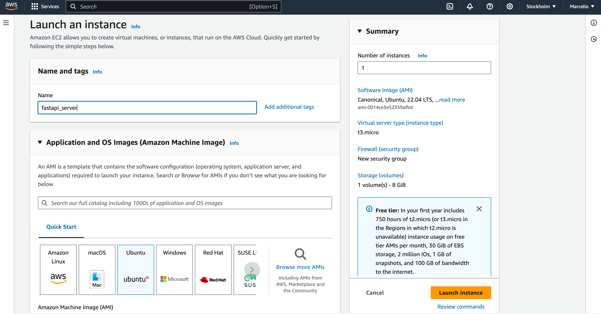
Note that we use the instance type "t3_micro" which provides a free tier. So we can test the app for free. If we exceed the allowed limits we will pay based on usage. In case it does not support the model, we can easily use a slightly more powerful instance.
Also, we need to create a key pair for the ssh connection. So let’s click on create new key pair.
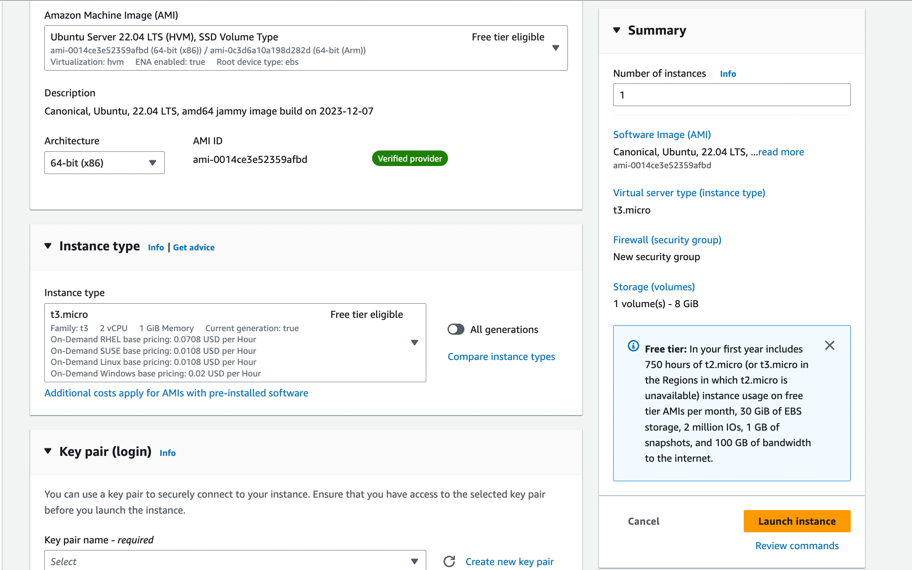
You will get this screen, where you have to name the key pair. I will use the name "fastapi_ec2_pair." (It is in red because I had already created a key with that name). Let’s leave the rest of the default settings and generate the keys. You should see that the browser is downloading a file, which we will then need to use in the working directory.
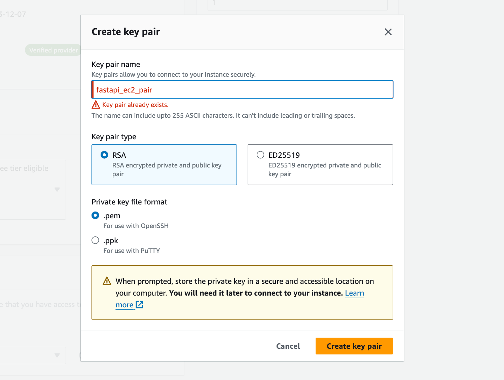
Now we should enable traffic from each option SSH, HTTP and HTTPS. And finally, launch the instance.
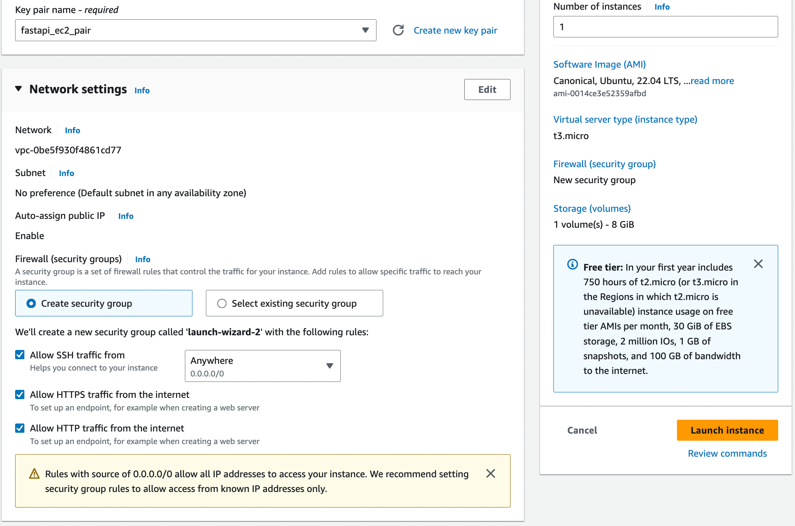
Let’s visualize our instances, by clicking on the "view all instance".
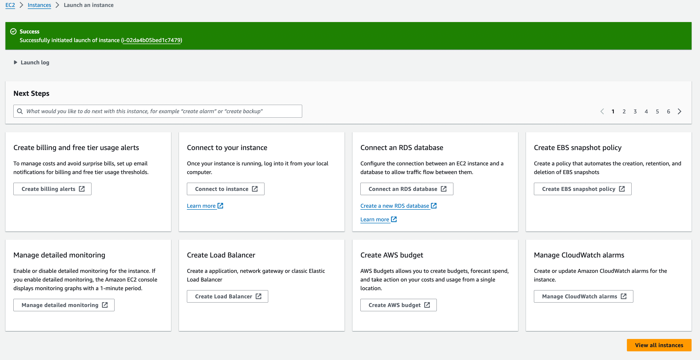
Here you can see my new instance! Let’s click on it to visualize the configurations.
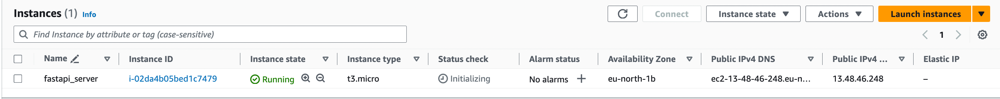
The IP address of this instance to which people can connect all over the internet, is visible under the text "Public_IPv4_address". In my case is 13.48.46.248.
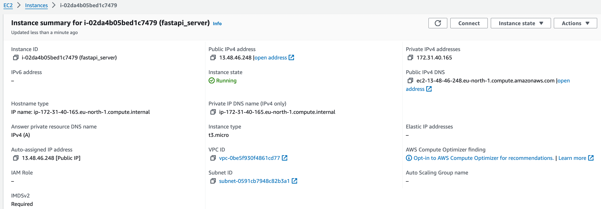
Let’s see what happens if we click on the generated IP. We do see an error, because our instance is empty there is no project inside.
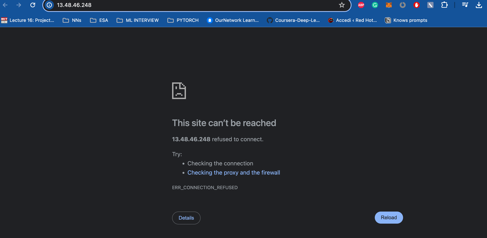
In the previous screen, the one about our AWS instance, there was a tab in the upper right corner with the entry connect. If we click on it, it explains how to connect to the created instance via SSH connection.
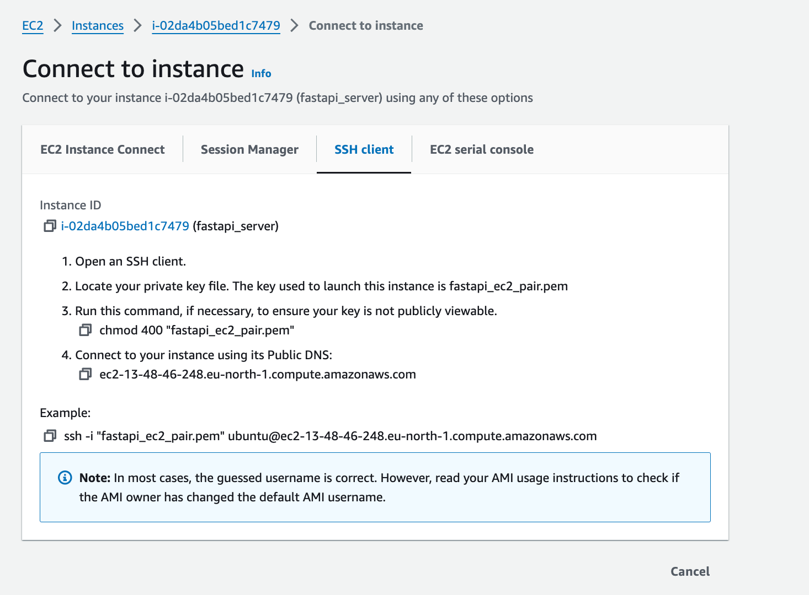
For the next steps, we should use the terminal a bit. If you are unfamiliar with basic terminal commands you can consult this guide.
Create a folder in your laptop from where you want to connect via SSH to AWS. Paste the key you generated earlier into it.
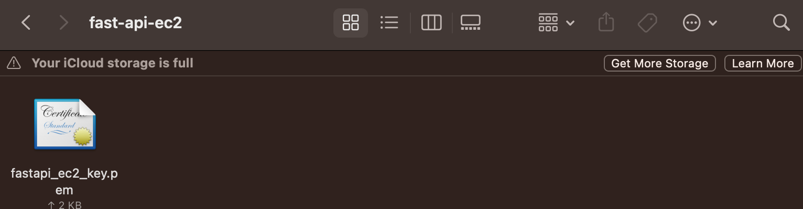
Now open the terminal and locate it within this folder.
We change the permissions of the file containing the key with the chmod command.
chmod 400 fastapi_ec2_key.pemCopy the connection string you find in the AWS connect screen (two images above).
In my case this is the string : ( type yes if it asks if you are sure to connect)
ssh -i "fastapi_ec2_key.pem" ubuntu@ec2-16-171-176-76.eu-north-1.compute.amazonaws.comwe are now entering the AWS instance, basically an empty Linux machine.
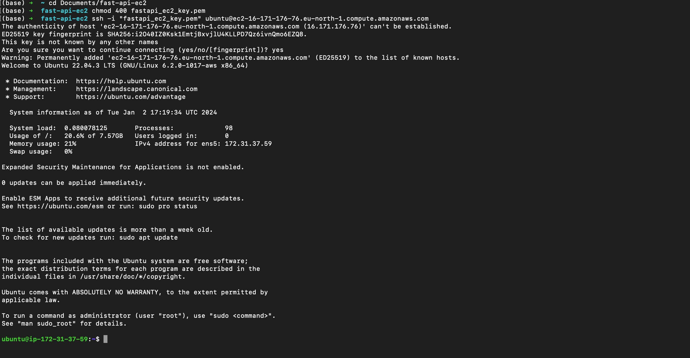
Let’s do an update of all repositories on the machine.
sudo apt-get updateWe have to install pip and nginx. We need pip to be able to install all the Python libraries in our project. Whereas nginx in a nutshell is a service that allows us to connect our FastAPI service with the IP address generated by the AWS instance. So when people visit the IP address they will be redirected to FastAPI.
sudo apt install -y python3-pip nginxMake sure the installations are successful.
Now we need to create a configuration file to configure nginx. So we create a new file using Vim.
sudo vim /etc/nginx/sites-enabled/fastapi_nginxIf you have never used VIM it might be a little tricky. Use "i" to switch to write mode and write whatever you want.
To save and exit click "esc," then ":" and enter "wq" + enter, to save and exit.
I leave here a repo for you to learn how to use VIM.
Within this file, we write the following settings
server {
listen 80;
server_name 16.171.176.76;
location / {
proxy_pass http://127.0.0.1:8000;
}
}Here is a screenshot of my terminal.
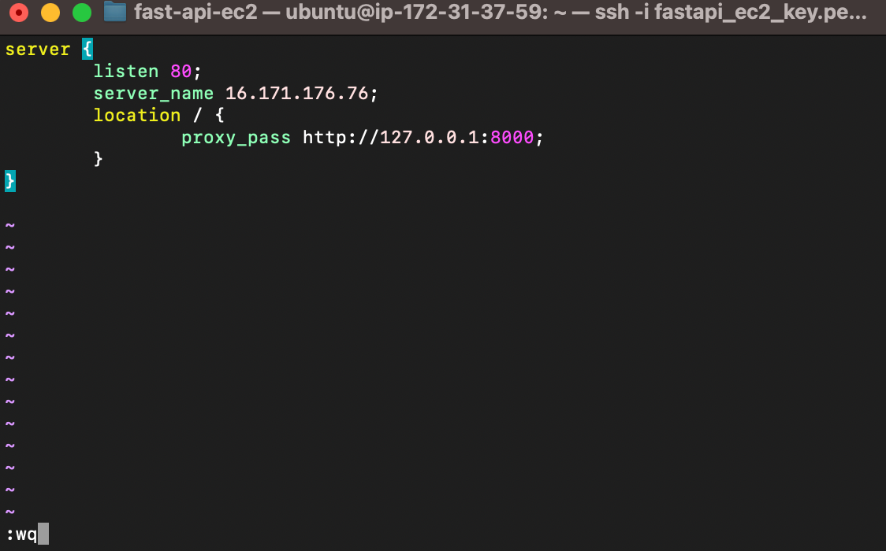
Now we need to restart the nginx service to load the new settings.
sudo service nginx restartWe’re almost there! Now within this instance, we can clone our GitHub project. To clone:
git clone http_link_of_yout_github_projectEnter the cloned project
cd tiny-llm-ec2/And install the libraries we have included in the requirements.
pip install -r requirements.txtInstallation Errors?
You may have errors due to the fact that we have few resources in our instance and the required libraries are too large. In this case, I suggest you install one library at a time using pip.
Also since we only need PyTorch on the CPU we can install only the CPU version instead of installing torch entirely.
That way you should be able to install everything.
pip3 install torch torchvision torchaudio --index-url https://download.pytorch.org/whl/cpupip install uvicornpip install fastapipip install transformerspip install accelerateNow we launch the web service, then the created API, using uvicorn.
python3 -m uvicorn main:appIf we access the IP address we will see a black screen. This is because in FastAPI we have not set the ability to access via HTTPs but only HTTP by default.
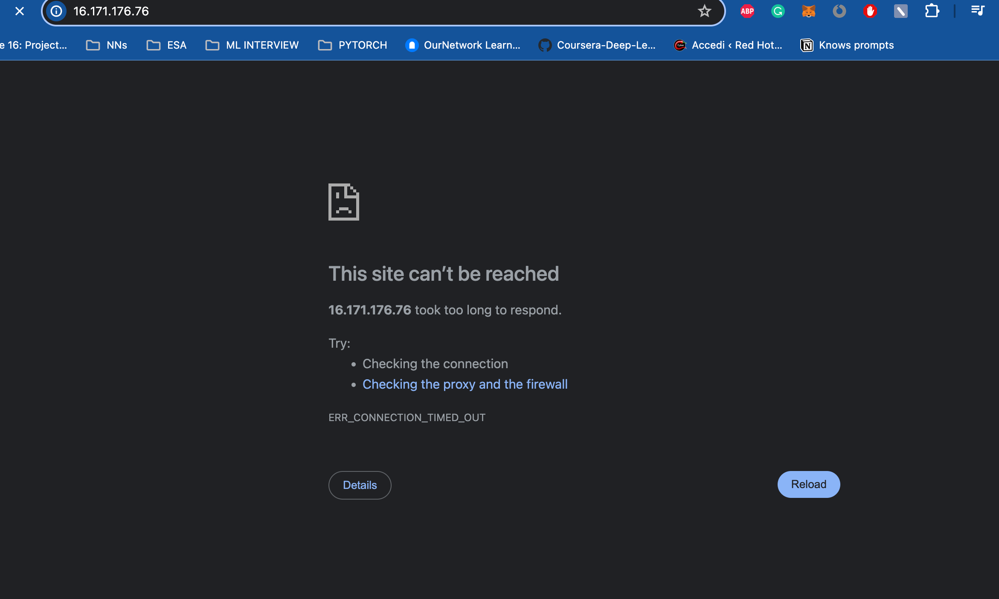
We should now see the initial FastAPI message. If we enter the URL http://ip/docs we can use the API.
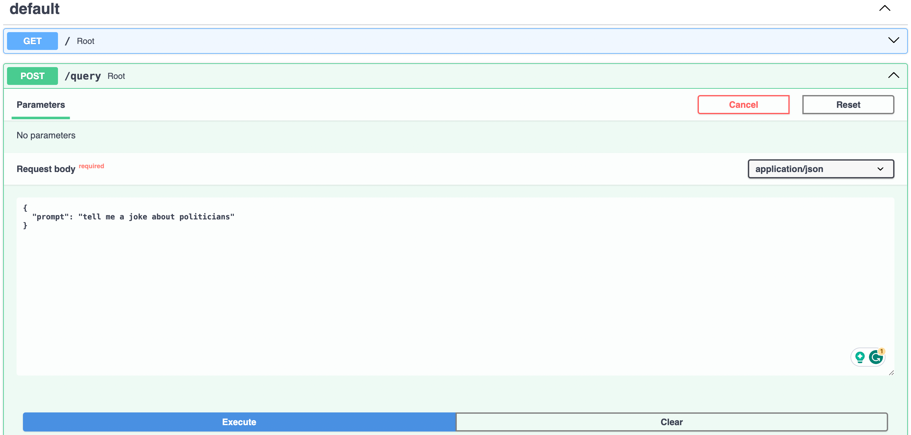
If we use the query API, we see from the terminal that the model will be downloaded. At this point, you may have problems because the EC2 instance is too small and does not support the whole model in memory.
Memory Errors?
What we can do is change the instance and use a larger one. Stop your instance, then click on action -> instance setting ->change instance type.
Choose a t3.medium instance, which grants you more memory, and save. Reactivate the instance.
Now, however, the IP address will have changed, so re-modify the nginx settings with the new IP.
sudo vim /etc/nginx/sites-enabled/fastapi_nginxAfter saving please do remember to restart nginx.
sudo service nginx restartTime-out error?
There is another error you might find. Since the server takes a long time to run because we are using an LLM on CPU, a timeout error might come back by default. Let’s change the nginx settings to change the maximum timeout and set it to 3 minutes.
So once again we change the settings:
sudo vim /etc/nginx/sites-enabled/fastapi_nginxLet’s change the previously written settings to the following, in which we specify to wait for a response for longer (be careful to write your IP and not mine).
server {
listen 80;
server_name 16.171.176.76;
location / {
proxy_pass http://127.0.0.1:8000;
proxy_connect_timeout 60s;
proxy_send_timeout 60s;
proxy_read_timeout 180s; # Set to 3 minutes (180 seconds)
}
}sudo service nginx restartNow finally if we launch uvicorn everything should work perfectly!
python3 -m uvicorn main:appAnd you will be able, by waiting a while, to use the API and get your model response!
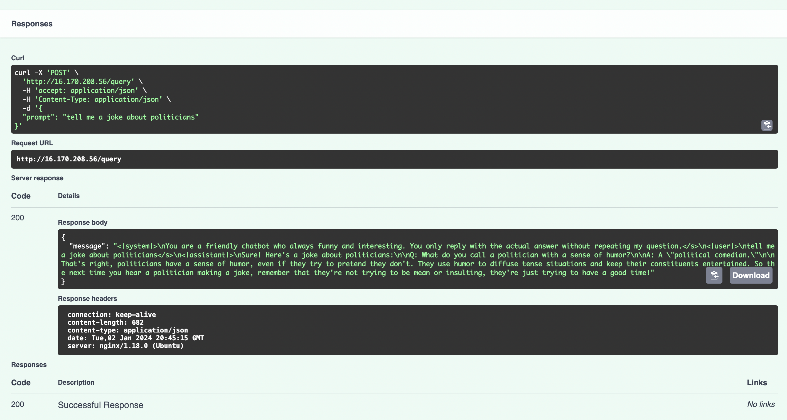
We finally did it!
Deploying a model is never trivial but it is essential to create something that can be used. If you are not going to actually use this project, remember at the end to terminate your EC2 instance to avoid paying for unwanted things.
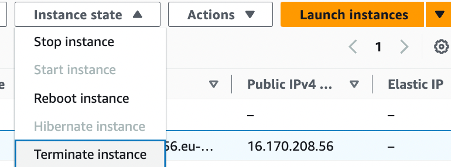
Final Thoughts
For years I thought the only interesting part of Machine Learning was just the creation and training of the model. In real applications, though, it’s all useless if you don’t allow people, whether it’s a customer, or the general public, to use what you’ve built.
Understanding how to deploy a model is a key part of the pipeline, requiring specific skills that are absolutely nontrivial. I hope this article has helped you understand how to set up an instance on AWS to deploy your Machine Learning models.
If you are interested in this article follow me on Medium! 😁
💼 Linkedin ️| 🐦 Twitter | 💻 Website
This article is also published on Towards Data Science.